Build Gallery
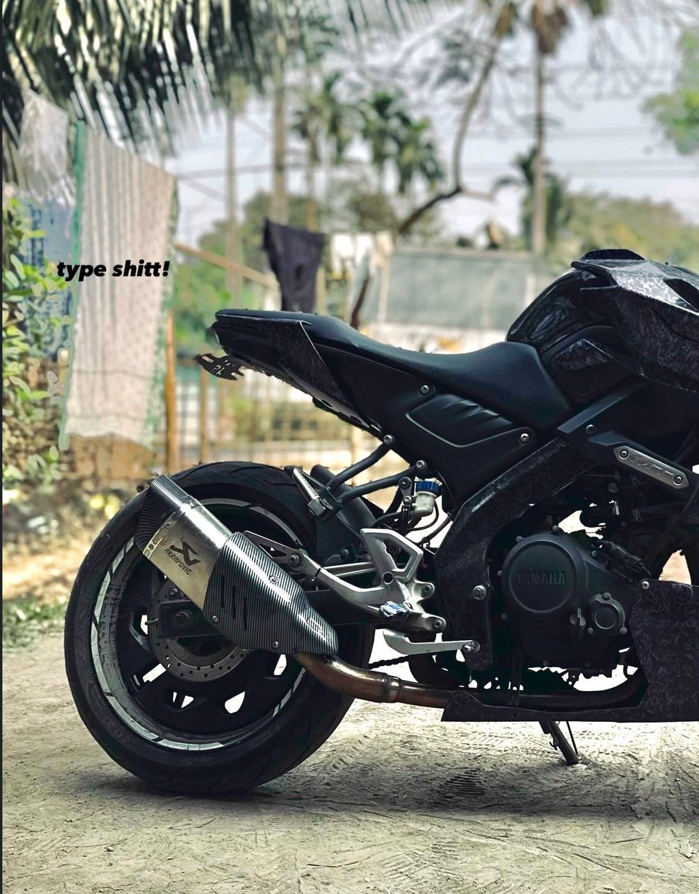
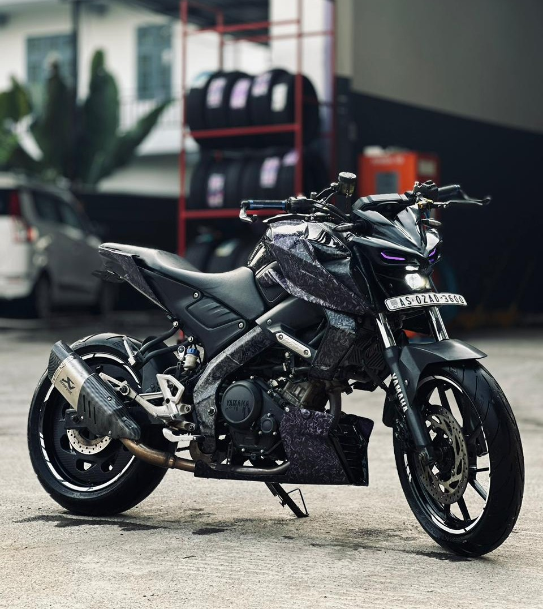
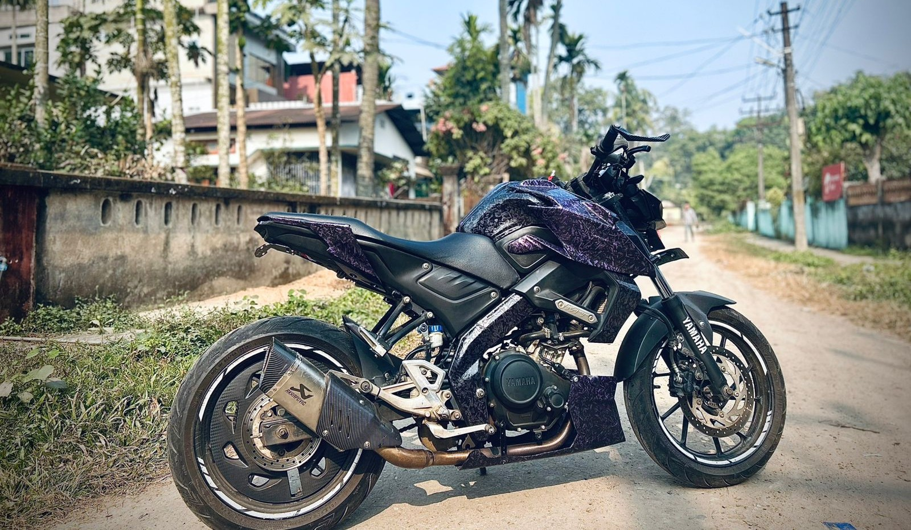
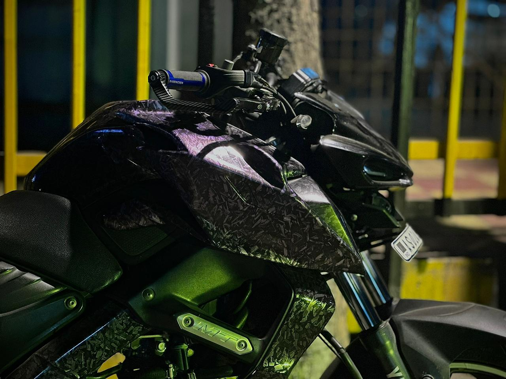
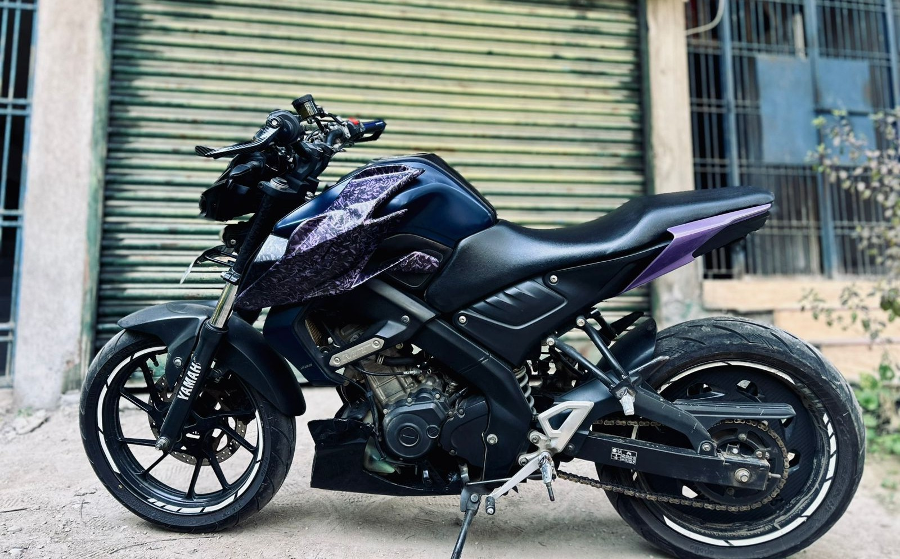
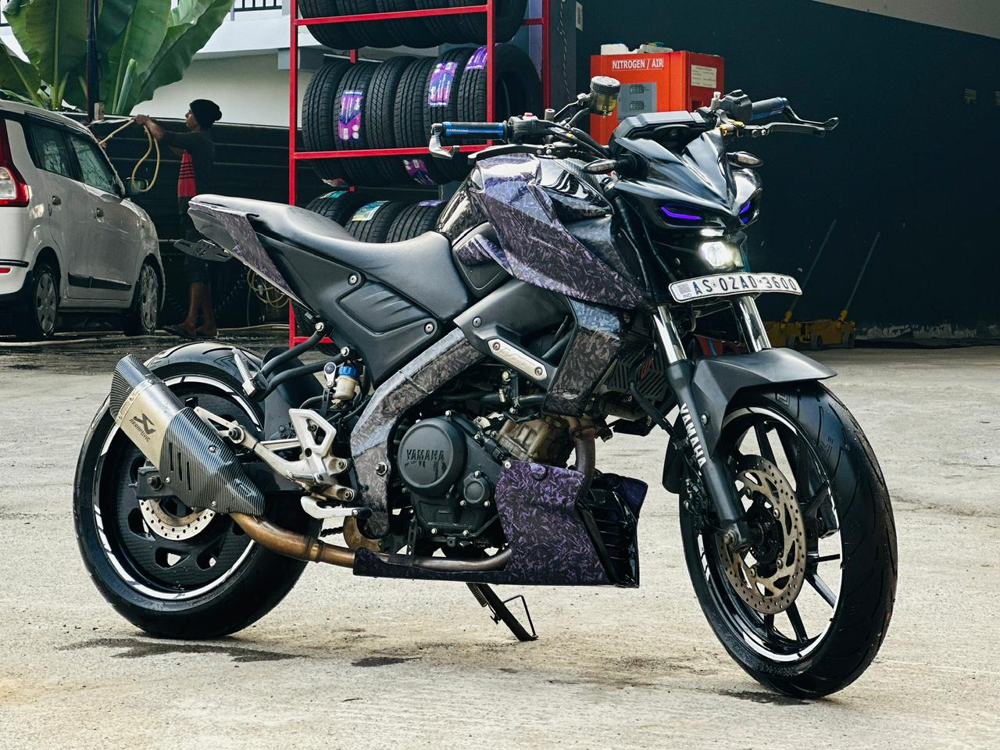
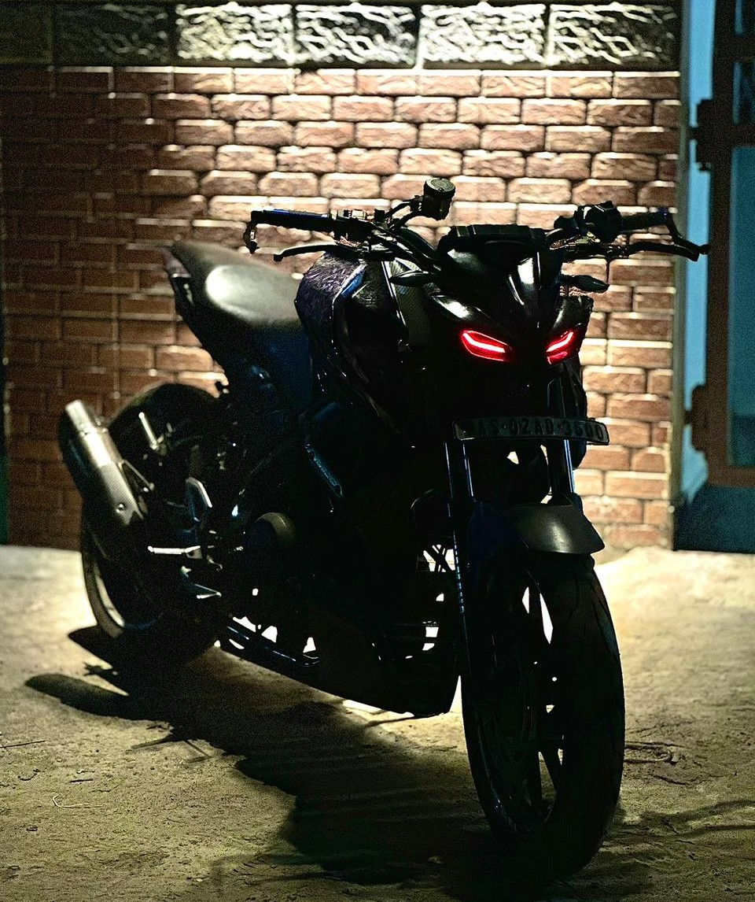
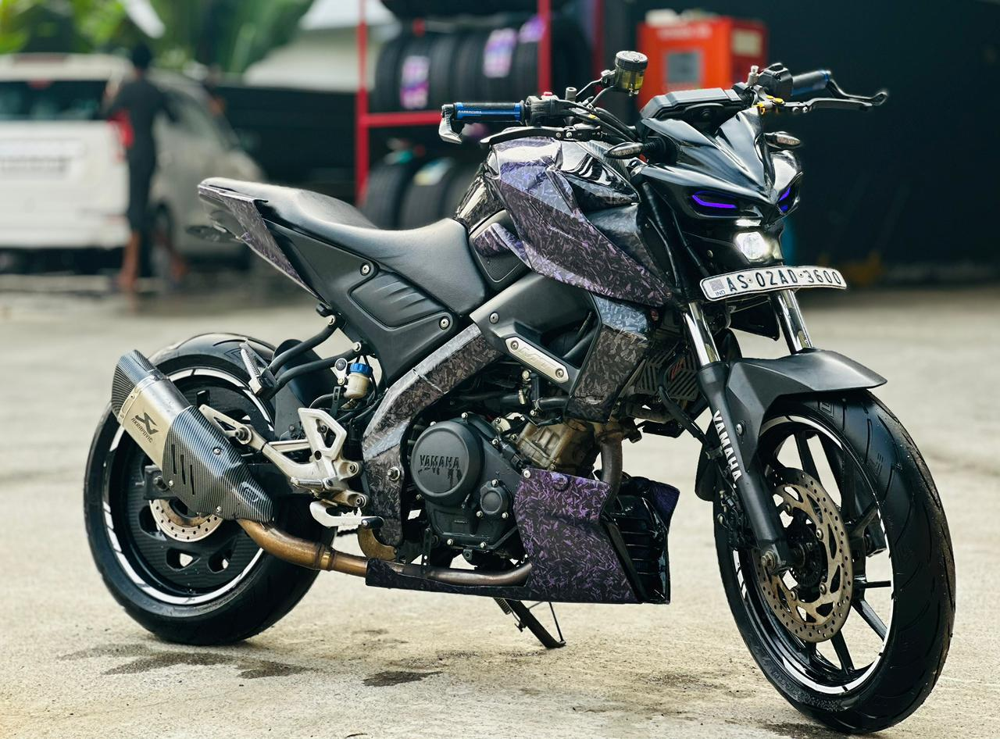
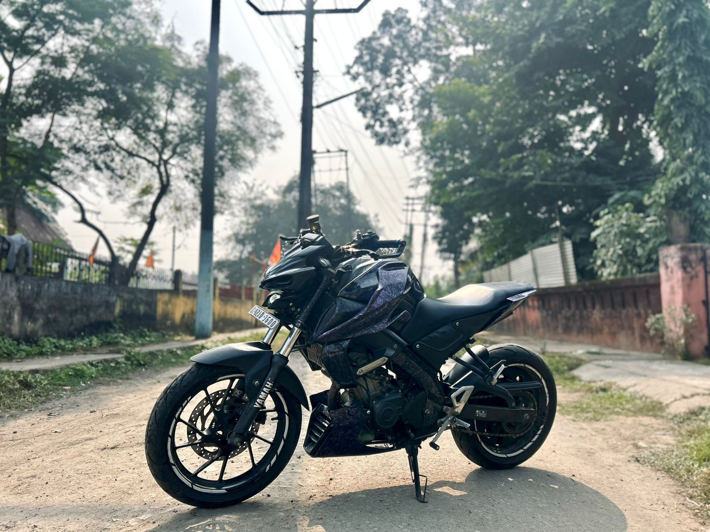
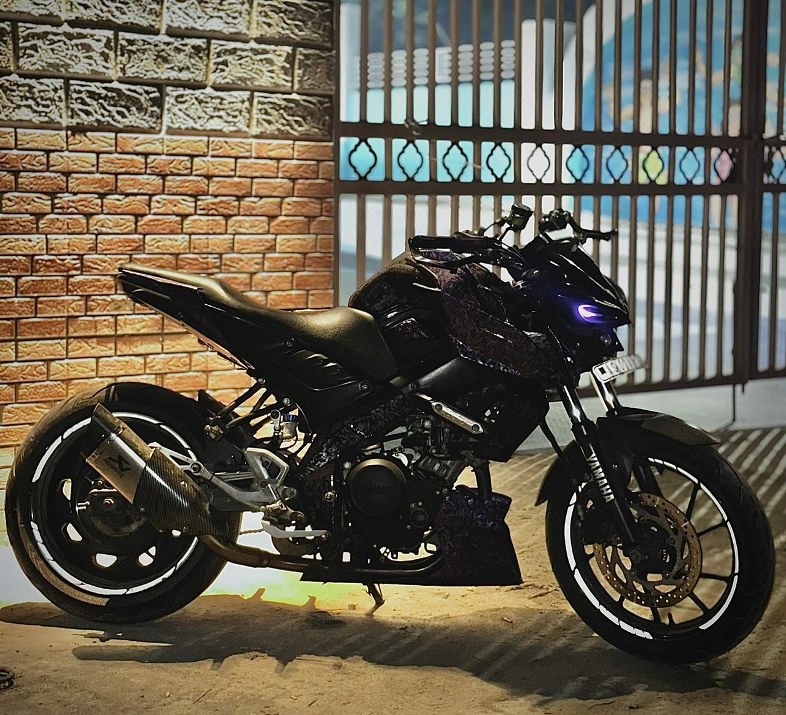
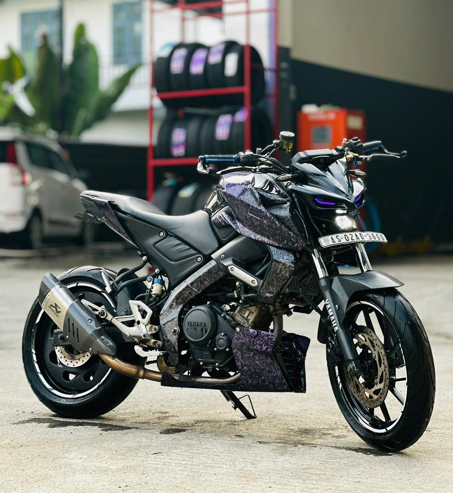
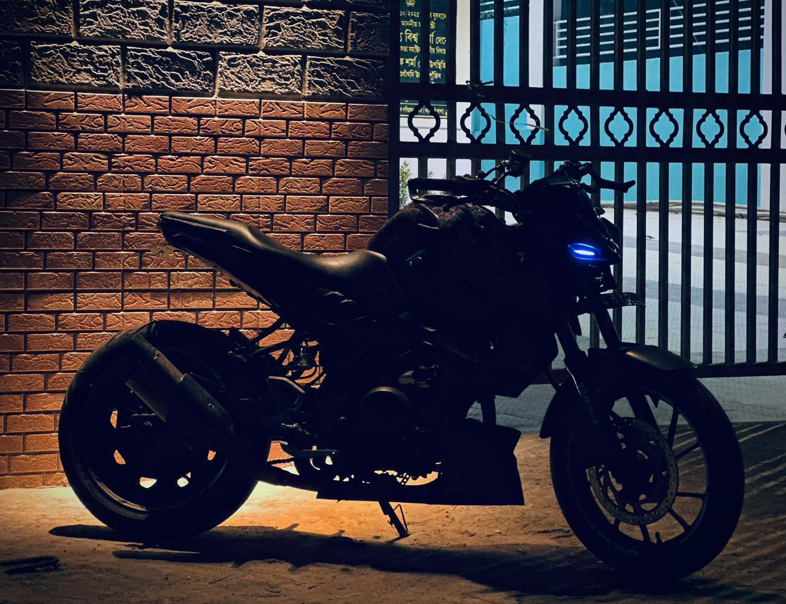

The Ultimate 2020 Yamaha MT-15 Build
THAT FORGED MT is a 2020 BS4 Yamaha MT-15 that stands as a true representation of performance and personalization. Owned by @nibir_.n and directed by @bishnu.xo._, this machine may be underrated, but it is undeniably one of the most tastefully built MT-15s in the scene.
Fully loaded with premium upgrades, the bike features a Valvetronic exhaust system, RGB DRLs, a custom head mask, aggressive body kit, and an underbelly enhancement that sharpens its street presence. Performance is elevated with a BMC air filter, while control and braking precision are refined through Brembo brake and clutch levers.
Showcased through its dedicated Instagram handle @thatforged.mt, THAT FORGED MT reflects passion, precision, and individuality—making it a standout build in the MT community.